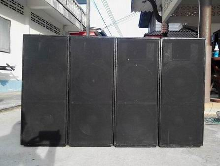

|
หลังจากที่ได้เก็บเล็กผสมน้อยรายได้จากกิจนิมนต์บ้าง
มีผู้ถวายบ้าง ศาสนกิจบ้าง ซึ่งแอดมิน (พระมหาบุญโฮม) เชื่อว่าโยมถวายปัจจัย(เงิน)มาเพื่อให้สร้างประโยชน์ต่องานคณะสงฆ์ส่วนรวม
มิใช่ถวายมาเพื่อให้เก็บไปใช้ส่วนตัว จึงหยอดกระปุกไปเรื่อย ๆ
เมื่อพร้อมค่อยดำเนินการ (ถึงแม้จะมีผู้ปวารณาไว้ แต่ไม่เคยเรี่ยไรหรือออกปากขอจากญาติหรือผู้ปวารณา
แต่หากเขานำมาถวายเองก็รับและใส่กระปุก/ตู้บริจาคเอาไว้ เมื่อพร้อมจึงค่อยคิดสร้าง/ซื้อสิ่งของไว้ใช้ในกิจการคณะสงฆ์)
มาครั้งนี้ได้พิจารณาเห็นว่าระบบเสียงที่มีอยู่ใช้มานาน ควรจะมีการปรับปรุง
ดังนั้น แอดมินจึงจัดซื้อลำโพง 12 นิ้ว ยี่ห้อ GIP รุ่น GPA-1245
จำนวน 16 ดอก แต่มีผู้เอาดอก P.Audio มาแลกไป 8 จึงเหลือ GIP รุ่น
GPA-1245 จำนวน 8 ดอก และ P.Audio จำนวน 8 ดอก และยูนิตเสียงแหลม
AJ PS-15 +ปากไฟเบอร์ 6x6 จำนวน 4 ดอก อุปกรณ์ต่อตู้ลำโพง เช่น
สี และนายกำธรและภรรยาได้บริจาคกระดานอัด 15 มิล.มา 3 แผ่น เมื่อทุกอย่างพร้อม
จึงเริ่มลงมือ "ต่อลำโพงเสียงกลาง-แหลม ขนาด 12X2 ไว้ใช้ในศาสนกิจ
(เสียงกลาง12นิ้ว ใช้ดอก P.Audio โครงหล่อ= ตู้ละ 2 ดอก+แหลม AJ
PS15II= ตู้ละ 1 ดอก)" โดยทำได้ 4 ตู้ ไว้ใช้ไปพลาง ๆ ก่อน
รอหยอดกระปุกให้มีงบฯ พอ ค่อยซื้อไม้กระดานอัดมาทะยอยทำเพิ่มให้ครบตามจำนวนที่กำหนดไว้...
(ยังขาดไม้กระดานอัด ขนาดหนา 20 มิล.เพิ่มอีก 3 แผ่น [เพื่อทำตู้กระแทก]
และไม้กระดานอัด ขนาดหนา 15 มิล. อีก 3 แผ่น [เพื่อทำตู้เสียงกลาง-แหลม
ใส่ดอกเสียงกลาง 2 ดอกและแหลม 1 ดอกในตู้เดียวกัน] ... งานนี้โดยมีผู้อาสาเป็นลูกมือช่วยเหลือ
4 รูป แบ่งเป็นพระ 2 รูป เณร 2 รูป ทำเสร็จ พ่นสี ติดตั้งดอกลำโพง
ทดลองเสียง โอเค ผ่าน ไม่ผิดหวังจริงๆ (เสียดายที่ตอนทำ ไม่มีโอกาสถ่ายภาพทุกขั้นตอน)...
ท่านใดจะเอาอย่างไปประยุกต์ใช้ก็ไม่สงวนสิทธิ์นะครับ
------------------------------------------
ข้อมูลเพิ่มเติมที่เราชาวพุทธควรตระหนักรู้
ระบบเสียงในวัด
เป็นสิ่งที่จำเป็นมาก เพราะต่อให้พระนักเทศน์ จะมีความรู้ ความเข้าใจ
ทักษะในการเทศน์ถ่ายทอดธรรมะ ทัศนคติที่ดีต่อการเผยแผ่ธรรมะ และมีความประพฤติดีปฏิบัติชอบสักเพียงใด
สาระจะมากสักเพียงไหน หรือแม้แต่จะเทศน์เก่งสักเพียงใด แต่หากระบบเสียงไม่ดี
ผู้ฟังไม่ได้ยินหรือได้ยินไม่ชัด การเทศน์ การเผยแผ่พระพุทธศาสนาก็ไม่ประสบผลสำเร็จ
และการประชาสัมพันธ์ก็ไม่ประสบผลสำเร็จ ง่านก็เสีย ภารกิจก็เสีย
และหากไม่สร้างไว้ เมื่อมีงานบุญกุศลในวัด (โดยเฉลี่ยเดือนละ ๓
งานเป็นอย่างน้อย) จะต้องเช่าจากผู้ที่ให้บริการ ซึ่งนอกจะต้องเสียเงินจำนวนมากแล้ว
เวลาเปิดใช้งานก็ไม่สะดวก มิหนำซ้ำ "เครื่องเสียงที่นำมาบริการก็จะเปิดเพลงตามสไตล์ชาวบ้าน
บางครั้ง(ส่วนมาก) จะเปิดเพลงที่ขัดต่อศีลธรรม ยั่วยุกามารมณ์
และขัดต่อสภาพของวัด "
ดังนั้น
พระมหาบุญโฮม ปริปุณฺณสีโล จึงจัดสร้างระบบเสียงเพื่อใช้ในงานบุญกุศลและกิจการคณะสงฆ์
(ฟรี) ด้วยเงินส่วนตัว เพื่อให้เกิดบุญกุศลอย่างเดียว แอดมินรับบุญเต็ม
ๆ หากมีวัสดุอุปกรณ์ใดขัดข้อง เสียหาย แอดมินก็รับผิดชอบค่าใช้จ่ายเอง
วัดและคณะสงฆ์ไม่ต้องแบกรับภาระใด ๆ
ตลอดระยะเวลา ๒๖ ปีเศษที่ผ่านมา ที่แอดมิน (พระมหาบุญโฮม)
มาอยู่ที่วัดท่าไทร ได้สร้างตู้ลำโพงและระบบเสียงสำหรับใช้ในงานบุญและศาสนกิจภายในวัด(ฟรี)
เท่านั้น โดยสร้างจำนวน ๔ ครั้งใหญ่ ในการสร้าง ๓ ครั้งแรกตีตรา
"วัดท่าไทรซาวด์" แต่อะไร ๆ ก็ตามที่ขึ้นชื่อว่า "ของวัด"
มักจะมี "ผู้สู่รู้ มากความคิด เก่งแต่ปาก แต่ไม่เคยสร้างสรรค์อะไรที่ดีแก่ส่วนรวม"
ชอบเข้าไปยุ่งเกี่ยวเสมอ ไม่นานสิ่งของก็พังเสียหายแล้วไม่เคยมีใครแสดงความรับผิดชอบ
สุดท้ายแอดมินจึงตัดสินใจสร้างขึ้นเป็นครั้งที่ ๔ แล้วตีตรา "พระมหาบุญโฮม"
เมื่อ ๑๑ ปี เศษที่ผ่านมา ซึ่งรอบนี้ใช้ได้นานที่สุด มีคุณภาพเสียงที่ดีที่สุดกว่าทุกครั้ง
และใช้เงินเพื่อการนี้มากที่สุดกว่าทุกครั้ง แต่ก็รำคาญปากหอยปากปูที่ไม่เคยช่วยเหลืออะไรในเลย
การสร้างระบบเสียงนี้ มิใช่เพราะชอบ แต่เพราะความจำเป็นต่อการใช้งาน
พอเหมาะ พอควร เข้ากับบริบทของวัด เพื่อให้ศาสนกิจเป็นไปได้ด้วยดี
มีประสิทธิภาพในการปฏิบัติงาน เพื่อให้เหมาะสมและทันต่อเวลา ประหยัดและคุ้มค่าใช้จ่าย
มีคุณภาพ และความพึงพอใจต่อพุทธศาสนิกชนผู้มาร่วมงาน ครับ
ทุกครั้งที่ พระมหาบุญโฮม ปริปุณฺณสีโล ได้สร้างตู้ลำโพงใหม่ขึ้นมาใช้ในงานบุญกุศลของวัด(ฟรี)ด้วยเงินส่วนตัวแทนของเดิมที่มีอยู่แล้ว
ก็จะบริจาคตู้ลำโพง/ดอกลำโพง ฯลฯ ของเดิมนั้น ให้แก่วัดต่าง ๆ
อยู่เป็นประจำ ซึ่งหากประเมิน/คิดเป็นเงินแล้ว ก็เป็นจำนวนที่มิใช่น้อย
หลังเคร่งเครียดและเมื่อยล้าจากอ่านหนังสือหรืองานอื่น
ๆ แอดมิน(พระมหาบุญโฮม)มักจะหาอะไรทำสักอย่างเพื่อผ่อนคลายความเหนื่อย
เมื่อยล้า เช่น เขียนหนังสือทางวิชาการ ผลิตสื่อ ทำตู้เก็บของ
ตู้ลำโพง ทำโต๊ะ เก้าอี้ ซ่อมโน่นนิดนี่หนอย ปลูกต้นไม้ ฯลฯ (ด้วยเงินเก็บเล็กผสมน้อยเก็บเล็กผสมน้อยจากกิจนิมนต์บ้าง
มีผู้ถวายบ้าง ศาสนกิจบ้าง แอดมินเชื่อโดยสนิทใจว่าโยมถวายปัจจัย(เงิน)มาให้สร้างประโยชน์ต่องานคณะสงฆ์
มิใช่เพื่อให้เก็บไปใช้ส่วนตัว จึงหยอดกระปุกไปเรื่อย ๆ เมื่อพร้อมจึงค่อยคิดสร้าง/ซื้อวัสดุอุปกรณ์
และเครื่องมือมาเตรียมไว้) สำหรับใช้ในวัดและศาสนกิจของสงฆ์มาโดยตลอด
.. .จึงนำภาพมาให้ชมเผื่อท่านใดจะเอาอย่างไปประยุกต์ใช้โดยแอดมินไม่สงวนสิทธิ์นะครับ
ข้อมูลเกี่ยวกันระบบเสียงของแอดมินที่มีอยู่ขณะนี้
(๘ มกราคม ๒๕๕๘) เพื่อใช้ในงานบุญกุศลของวัดและคณะสงฆ์ (ฟรี) เท่านั้น
ประกอบด้วย
เครื่องมิกซ์ Behringer
MX๓๒๘๒A Eurodesk (มีมิกซ์ ๓ ตัว : ตัวที่ ๑ ยี่ห้อ Actor ๓๒ ช่อง,
ตัวที่ ๒ ยี่ห้อ Behringer MX๓๒๘๒A Eurodesk ๓๒ ช่อง, ตัวที่ ๓
ยี่ห้อ Actor ๑๒ ช่อง) เพาเวอร์แอมป์ (สเตอริโอ) ๔,๐๐๐ วัตต์ ใช้ขับซับเบส,
เพาเวอร์แอมป์(สเตอริโอ) ๒,๘๐๐ วัตต์ ใช้ขับเสียงกลาง ๑๕ นิ้ว
ข้างละ ๔ ตู้, เพาเวอร์แอมป์ (สเตอริโอ) ๒,๘๐๐ วัตต์ ขัยเสียงกลาง
๑๒ นิ้ว ข้างละ ๖ ตู้, เพาเวอร์แอมป์ (สเตอริโอ) ๑,๑๐๐ วัตต์ ขับเสียงแหลม,
เพาเวอร์แอมป์ (สเตอริโอ) ๑,๖๐๐ วัตต์ ใช้ขับมอนิเตอร์, และเพาเวอร์แอมป์
๕๕๐ วัตต์ ขับฮอร์น/เสียงตามสาย,และเพาเวอร์แอมป์มอสเฟต ๑๐๐ วัตต์
สำรองสำหรับขับเสียงตามสาย, ลำโพงกระแทก ๘ ตู้, เสียงกลาง-แหลม
ขนาด ๑๕ นิ้ว ๘ ตู้, มอนิเตอร์ ๑๐ ตู้, เสียงกลาง ขนาด ๑๒ นิ้ว
๑๒ ตู้, เสียงกลาง-แหลม ขนาด ๑๒ นิ้ว ๔ ตู้ ระบบลำโพงฮอร์น(เสียงตามสาย)
๑๒ ดอก และระบบเสียงสำรองกรณีไฟฟ้าดับอีก ๖ ตู้ (เปิดใช้ตลอดงาน
มีเพาเวอร์แอมป์และแบตเตอรี่ในตัว หากไฟฟ้าดับ จะไม่ขาดช่วง) ....
ท่านใดจะเอาอย่างไปประยุกต์ใช้ก็ไม่สงวนสิทธิ์นะครับ
|
|
|
|
|
หลวงตา
"ดำ" กำลังขัดตู้ให้เรียบ สวยงาม หลังจากประกอบตู้เสร็จ
|
|
พระมหาบุญโฮม
ปริปุณฺณสีโล กำลังติดฐานของตู้ลำโพง
|
|
|
|
|
|
ด้านหลังของตู้ลำโพง
12X2+1 ทั้ง 4 ตู้
|
|
ด้านหน้าของตู้ลำโพง 12X2+1 ทั้ง 4 ตู้
|
|
|
|
|
|
หยอดกาว
แล้วยิงปืนลมติดฐานของตู้ลำโพง 12X2+1 ทั้ง 4 ตู้ ให้แน่น
|
|
ติดฐานเสร็จ
ยกตั้งตามจริง ทดลองการใช้งาน
|
|
|
|
|
|
ด้านข้างของตู้ลำโพง
12X2+1 ทั้ง 4 ตู้
|
|
พ่นสีรอบแรกเสร็จ
ตากรอให้สีแห้ง เพื่อพ่นรอบที่ 2 และ 3
|
|
|
|

|
|
ใส่ดอกลำโพง
P.Audio โครงหล่อ= ตู้ละ 2 ดอก+แหลม AJ PS15II= ตู้ละ 1
ดอก
|
|
ปิดฝา/ฟิลเตอร์เรียบร้อย
พร้อมทดลองเสียงและใช้งาน
|
|
|
|
|
|
พ่นโลโก้
ติดคอนเนคเตอร์เพื่อต่อสายลำโพง (สเปคค่อน ทีอาร์ แท็บ)
แยกชุดเสียง
|
|
เทียบความสูงตู้ลำโพงกับสามเณร
|

กลับไปหน้า
Web วัดท่าไทร
ไป Web สำนักงานเจ้าคณะภาค
๑๖
ไป
Web ศูนย์พัฒนาคุณธรรมภาคใต้
ไป
Web วิทยุชุมชนตำบลท่าทองใหม่
ไป Web ชมรมวีอาร์ร้อยเกาะสุราษฎร์ธานี
|